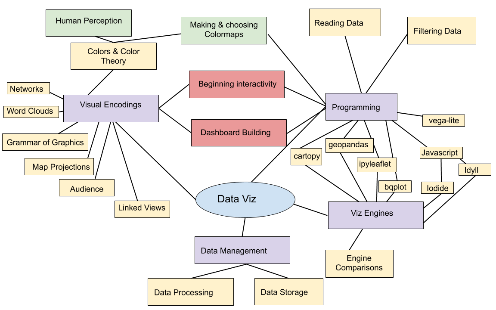
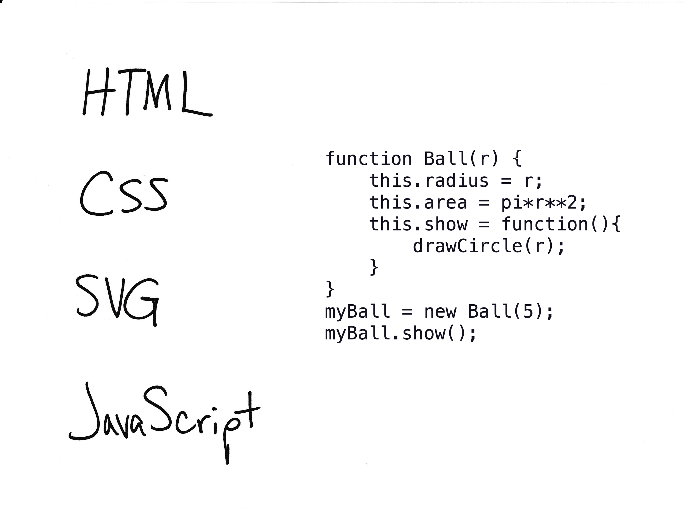

<!doctype html>
<html>
  <head>
<meta charset="utf-8">
<meta name="viewport" content="width=device-width, initial-scale=1.0, maximum-scale=1.0, user-scalable=no">

<title>Lecture 12, Part 1</title>

<link rel="stylesheet" href="https://cdnjs.cloudflare.com/ajax/libs/reveal.js/3.8.0/css/reveal.css">
<link rel="stylesheet" href="https://cdnjs.cloudflare.com/ajax/libs/reveal.js/3.8.0/css/theme/white.min.css">
<link rel="stylesheet" href="https://maxcdn.bootstrapcdn.com/font-awesome/4.5.0/css/font-awesome.min.css">

<!-- Theme used for syntax highlighting of code -->
<link rel="stylesheet" href="https://cdnjs.cloudflare.com/ajax/libs/highlight.js/9.12.0/styles/github.min.css">
<link href="https://fonts.googleapis.com/css?family=Questrial" rel="stylesheet">

<script src="https://cdnjs.cloudflare.com/ajax/libs/reveal.js/3.8.0/lib/js/head.min.js"></script>
<script src="https://cdnjs.cloudflare.com/ajax/libs/reveal.js/3.8.0/js/reveal.min.js"></script>


<script src="https://cdn.jsdelivr.net/npm/vega"></script>
<script src="https://cdn.jsdelivr.net/npm/vega-lite"></script>
<script src="https://cdn.jsdelivr.net/npm/vega-embed"></script>


</style>

  <link rel="stylesheet/less" type="text/css" href="/spring2020/assets/styles.less" />
  </head>

  <body>
    <div class="reveal">
      <div class="slides">
        <section data-markdown
           data-separator="^\n---\n"
           data-separator-vertical="^\n----\n">
          <script type="text/template">
<!-- .slide: class="titleslide" -->

# Data Visualization

<div style="height: 6.0em;"></div>

## Jill P. Naiman
## Spring 2020
## Lecture 12, Part 1

---

## Warm-Up Activity

1. What is the visualization trying to show?
1. What are its methods?
1. What are the strengths / weaknesses?

<br/>

https://mathisonian.github.io/diy-data-fugazi/

---

## This Week/Last Week



notes:

today we'll be continuing on with some of what we did last week -- moving into more Markdown-based viz and viz "reports" along with more javascript

---

## Survey posted later this week for final format

 1. Informal ~5 min presentation
 1. More formal critique of ~3 other submissions

---

## Today

 * Publishing
   * D3.js
   * Idyll
   * Github Pages
 * Guest Lecture: AVL

---

## Idyll

A web-based toolkit for storytelling with data visualizations!

 * Reduce manual coding for interactive articles
 * Integration with D3.js

---

## [D3.js](https://github.com/d3/d3/wiki/Gallery)

A JavaScript library for web-based data visualization

 * Declarative, not imperative (this is better for web coding)
 * Dynamic and interactive
 * Smooth transitions

---

## D3.js


notes:
D3 is meant to be well-integrated into the existing infrastructure of the internet. The worldwide web is a real patchwork of different languages with different syntaxes meant to do different things. Don't let it overwhelm you. They tend to be pretty simple to start, and only get more complicated when you need them to.

---

## D3.js


notes:
HTML or Hypertext Markup Language is the default syntax for websites. It's meant to be structured with tags like "head", "body", "paragraph", and "division". 

It's essentially a skeleton for other functionality to hang off of.

You may see the term DOM or Document Object Model. This is just another name for this skeleton/framework.

---

## D3.js


notes:
CSS or cascading style sheets are how you define how websites are formatted. They do color, indentation, drop shadows, etc. Each CSS call is attached to an HTML tag.

CSS can be called in-line, or from an external file dedicated exclusively to CSS code.

---

## D3.js


notes:
SVG or Scalable Vector Graphics is an XML-based implementation of vector shape drawing that's natively understood by website compilers. It's an easy way to include dynamically rendered, animated, or interactive imagery in a webpage.

---

## D3.js



notes:
JavaScript is a dynamic programming language that runs natively on webpages that we've been using the past few weeks in Iodide. If you want to run programming logic in a webpage, you use javascript. If you see interactivity or animated effects on a website, you can generally expect they were written in javascript. 

---

## Idyll

Most of this is hidden from you when writing in Idyll! But it helps to understand the underlying mechanisms.

D3.js and Idyll are another set of tools that can be used for the Final Project to share interactive visualizations connected in a narrative.

Vega-lite and Idyll may or may not be working as of this writing.

notes:
what are the limits to data size in Idyll and the web browser?

---

## Onto Idyll!

Idyll is a reactive markup language for visualization and narrative documents.

[idyll-lang.org](idyll-lang.org)

... and a quick detour into sci viz topics!

          </script>
        </section>
      </div>
    </div>
<script>
    // More info about config & dependencies:
    // - https://github.com/hakimel/reveal.js#configuration
    // - https://github.com/hakimel/reveal.js#dependencies
    Reveal.initialize({
        dependencies: [
            { src: 'https://cdnjs.cloudflare.com/ajax/libs/reveal.js/3.8.0/plugin/markdown/marked.js' },
            { src: 'https://cdnjs.cloudflare.com/ajax/libs/reveal.js/3.8.0/plugin/markdown/markdown.min.js' },
            { src: 'https://cdnjs.cloudflare.com/ajax/libs/reveal.js/3.8.0/plugin/notes/notes.min.js', async: true },
            { src: 'https://cdnjs.cloudflare.com/ajax/libs/reveal.js/3.8.0/plugin/highlight/highlight.min.js', async: true, callback: function() { hljs.initHighlightingOnLoad(); } },
            { src: 'https://cdnjs.cloudflare.com/ajax/libs/reveal.js/3.8.0/plugin/math/math.min.js', async: true },
            { src: 'https://cdn.jsdelivr.net/npm/reveald3/reveald3.js'},
            { src: '/reveal.js-plugins/chalkboard/chalkboard.js' },
            { src: '/reveal-paperjs/paper-figures.js', async: true},
        ],
		keyboard: {
			67: function() { RevealChalkboard.toggleNotesCanvas() },	// toggle notes canvas when 'c' is pressed
			66: function() { RevealChalkboard.toggleChalkboard() },	// toggle chalkboard when 'b' is pressed
			46: function() { RevealChalkboard.clear() },	// clear chalkboard when 'DEL' is pressed
			 8: function() { RevealChalkboard.reset() },	// reset chalkboard data on current slide when 'BACKSPACE' is pressed
			68: function() { RevealChalkboard.download() },	// downlad recorded chalkboard drawing when 'd' is pressed
		},
        center: false,
        transition: 'none',
        backgroundTransition: 'none',
	slideNumber: true

    });
</script>
<script src="//cdnjs.cloudflare.com/ajax/libs/less.js/3.9.0/less.min.js" ></script>


  </body>
</html>

